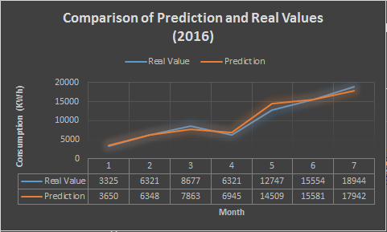
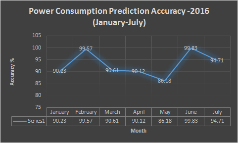

Comparison of Real and Predicted Values (2016)The graphs show the prediction of electricity consumption for the year 2016 based on the historical data from 2012 till 2015. The predicted and actual values nearly coincide for the months January, February and July and for rest of the months the difference is not more than 10 percent. Hence the prediction vector shows a very high accuracy. |
 |
Predicted AccuracyThe graph shows the accuracy range of the prediction of energy consumption in 2016 for the months January till July. The accuracy vector is greater than 90 percent on an average and provides a very close output when compared to the actual values. |
 |